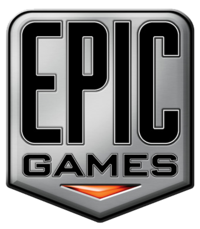

Epic Games (також відома як Epic, колишня Epic Megagames) — американська компанія, що займається розробкою відеоігор. Штаб-квартира розташована в місті Кері, штат Північна Кароліна. Компанія відома за ігровими серіями Gears of War , Fortnite і Unreal Tournament, а також як творці ігрового рушія Unreal Engine. До складу Epic Games входять такі дочірні компанії, як Chair Entertainment, People Can Fly і Titan Studios. Компанія має студії в Шанхаї, Кореї і Токіо. Ключові фігури в Epic Games — провідний програміст Тім Свіні (англ. Tim Sweeney), геймдизайнер Кліфф Блежинськи (англ. Cliff Bleszinski), Ерік де Нев (англ. Erik de Neve) і Стів Полдж (англ. Steve Polge).
Історія
Epic Games від початку була заснована під назвою Potomac Computer Systems в 1991 році Тімом Свіні в місті Роквіллі, штат Меріленд, випустивши в цьому ж році свою першу гру ZZT. Пізніше компанія змінила назву на Epic Megagames і випустила низку shareware-ігор: Epic Pinball, Brix, Jill of the Jungle, Jazz Jackrabbit і One Must Fall 2097. У цей же час, Epic видавала й продавала ігри інших розробників, таких як Safari Software, Xland (Robbo, Heartlight і Electro Man) і Renaissance (Zone 66). В 1997 році Safari Software була куплена Epic, і деякі їхні ігри пізніше були продані під брендом Epic Classics. У 1993 році Epic видала платформер Xargon від Allen Pilgrim.
У 1998 році Epic Megagames випустила Unreal, тривимірний шутер від першої особи, який пізніше виріс у цілую ігрову серію. Разом із цим компанія почала продавати ліцензії на Unreal Engine іншим розробникам. У 1999 році компанія перемінила назву на Epic Games і переїхала в Північну Кароліну. У 2006 році компанія випустила бестселер для Xbox 360 і PC шутер Gears of War, а восени 2007 року закінчила роботу над Unreal Tournament 3 для PC, PS3 і Xbox 360. 20 серпня 2007 року Epic придбала контрольний пакет акцій польської студії People Can Fly.[3]
20 травня 2008 року Epic Games придбала Chair Entertainment[4]. Улітку 2009 року Epic випустила розроблений ними Shadow Complex на Xbox Live Arcade. 7 листопада 2008 року Epic Games випустила Gears of War 2, сиквел до свого бестселера Gears of War, який продовжив історію битви між людьми й локустами.
Китайський підрозділ Epic Games China було відкрито в Шанхаї. [5] Завдяки цьому Epic придбала Titan Studios.[6] Інша студія, Epic Games Korea, була відкрита в Південній Кореї, у місті Сеулі[7]. Крім цього Майк Кепс (англ. Mike Capps) анонсував, що ще одна студія буде відкрита в Токіо. Вона буде займатися технічною підтримкою рушія й розробкою майбутніх ігор.
У 2011 розроблялися Gears of War 3[8] і Bulletstorm, яка розроблялася їхньою дочірньою студією People Can Fly[9], а також гра Infinity Blade на рушії Unreal engine 3.[10]